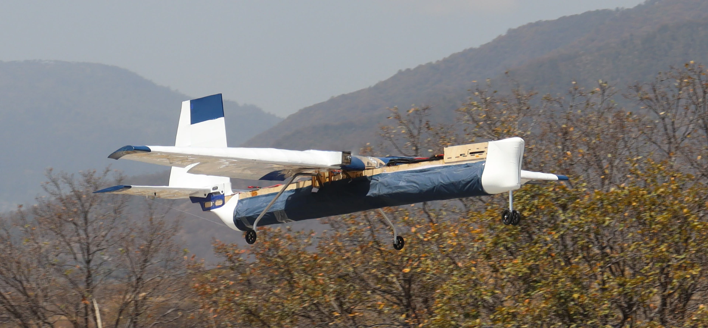
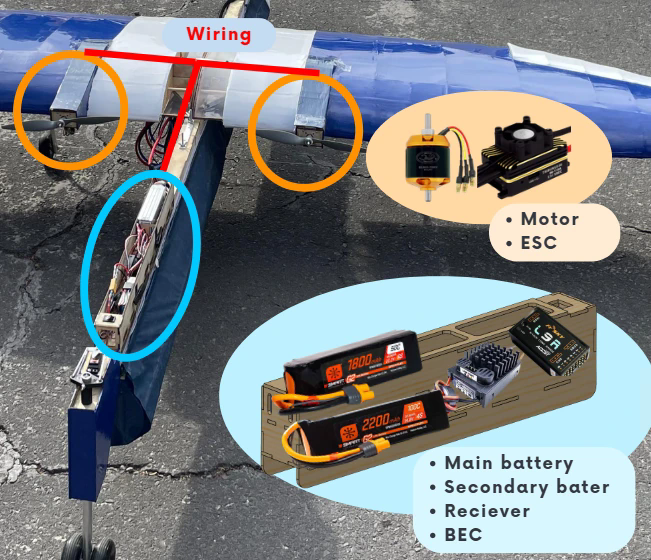
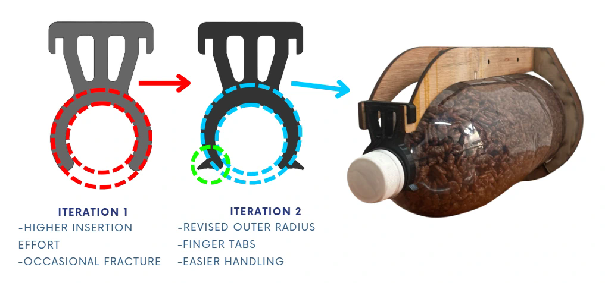
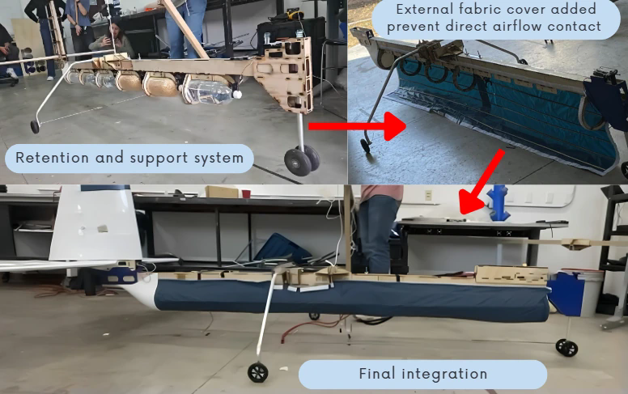

Keep wiring short.
Place the battery close to the motors.
SAE AERO DESIGN · 2026 · REGULAR CLASS
Design Captain & Engineering Coordinator · Borregos CEM AeroDesign, Tecnológico de Monterrey

Requirements → Aircraft design → Systems integration → Component iteration → Physical validation → Flight
01 / ENGINEERING CHALLENGE
Carry an internal bottle payload, take off within the competition limit, maintain stable handling and allow practical loading and unloading.
Payload · Mass · CG · Propulsion · Stability · Structure · Operations
Equal payload mass · different score
More bottles → cargo volume and retention became design drivers.
02 / MY CONTRIBUTION
Complete assemblies contained 400+ components.
Structural calculations were performed by the structures team.

03 / AIRCRAFT-LEVEL DECISIONS
Payload added →
Targeting ~25% MAC while empty would have required a larger horizontal stabilizer. Adding payload naturally shifted the CG forward toward ~25% MAC.
Analytical design states from stability and mass-property studies; not flight measurements.


Drag estimate → Takeoff model → Test thresholds
Used for density-altitude payload planning and local test thresholds. No quantitative CFD-to-flight correlation was measured.
04 / SYSTEMS INTEGRATION
Place the battery close to the motors.
Satisfy the required CG range.
Accept longer wiring to the wing-mounted motors and ESCs, with controlled routing.
Whole-aircraft balance took priority over the local wiring preference.

05 / PAYLOAD SYSTEM
Bottle-count scoring → Rigid supports → Retainer iteration → Fabric cover → Installed system

First geometry: higher insertion effort and occasional fracture.
Revised geometry: changed outer radius and finger-access tabs improved handling.
Insertion force was not measured. These checks do not establish a long-term creep lifetime.

Rule: payload could not be directly exposed to airflow.
Response: cover the supported bottles with fabric secured by Velcro.
A lightweight, unconventional and rule-driven solution.
06 / PHYSICAL VALIDATION

4.52 cm measured total wing deflection — distinct from beam deflection. Structural calculations: structures team. Assembly not tested to failure.
No visible cracks, fractures or permanent deformation reported.
Ground-test configuration, distinct from the later flown payload configuration.
FLIGHT TEST / ATIZAPÁN
Demonstrated in the flown configuration.
Precise takeoff distances were not logged for model-error comparison.
07 / OPERATIONAL READINESS
Motor / ESC calibration, cooling and synchronization.
CG checks and a payload-loading checklist.
Alignment and symmetry checks.
Preflight sign-off · Postflight inspection · Prepared spares & repair strategy
Documented FMEA controls, not measured reductions in failure probability. Repair planning distinguished bondable wooden parts from aluminum and printed parts requiring spares.
08 / RESULTS
Engineering outcome
~6 kgTwin-engine aircraft built, integrated, tested and flown.
Competition outcome · SAE Aero Design 2026
6th Technical Presentation
16th Design Report
16th Overall
Configuration distinction: the pre-competition report recorded 6.8 kg empty mass and an 11.98 kg maximum takeoff configuration. The ~7 kg empty / ~6 kg payload values describe the later demonstrated flight configuration.
CAD, analysis and wing-test figures are reproduced from the team design report; scoring and operational controls come from the team presentation. New integration diagrams and flight imagery were supplied for this case study.